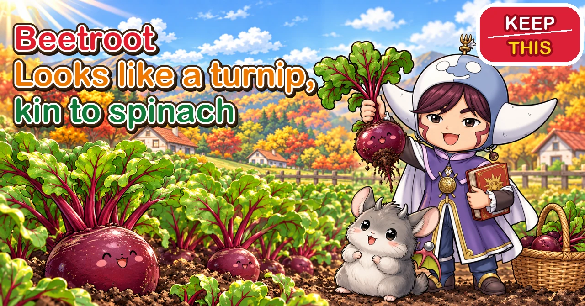
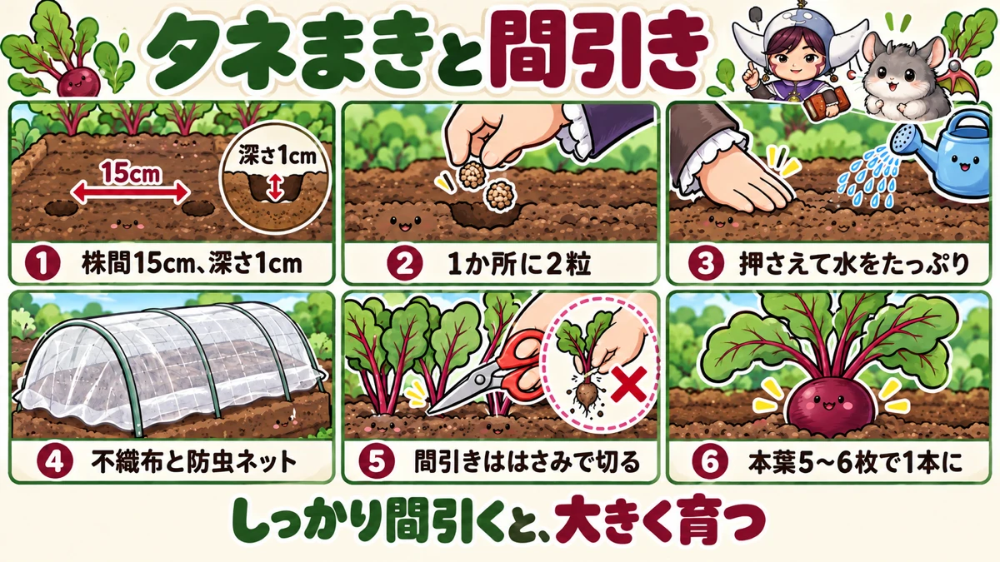

Beetroot ❤️ A complete guide from sowing to harvest

❤️ “I sowed beetroot, but several seedlings came up in one place. What should I do?”
❤️ “The leaves are growing, but the root is still tiny.”
❤️ “Can I keep a late autumn sowing alive through winter?”
Hello, I'm Eiko. Eight years of growing vegetables organically and without pesticides, and a teaching licence in science.
Beetroot catches the eye with a deep red root, but it is not a turnip or a red radish. It belongs to the same family as spinach and sugar beet. Its seed is a hard cluster containing several seeds, so several shoots often emerge from one spot. It also dislikes acid soil and uses a good deal of fertiliser. This guide takes you through the timing, soil preparation, sowing, thinning, feeding, harvest and winter care.
How to use this guide
If you are new to beetroot, start with the quick guide, soil preparation and sowing sections. If an autumn crop is still small, read the winter rescue section; it explains what protection and restrained feeding can and cannot do.
Where you are: the seasonal timings here are for a home garden in central Japan. Shift the months to your own climate, first frosts and winter temperatures. In this guide, spring sowing means around March, and autumn sowing should normally be finished by early September if you want roots before winter.
The essentials: prepare the soil about two weeks before sowing, check acidity before adding lime, leave about 15 cm between plants, and thin with scissors rather than pulling. Feed after about one month. A small autumn root will not suddenly become large in a cold winter, so protect it and harvest it as it is if necessary.
① The quick guide to beetroot
- Family: Amaranthaceae, the family of spinach and sugar beet; it is separate from the brassica family of turnips and radishes
- Sow: in spring, around March, and from late summer into early autumn, up to early September in central Japan
- Soil: it dislikes acid soil; use lime to adjust the pH before sowing
- Seed: a hard seed ball containing more than one seed, so several shoots can emerge from one place
- Thin: keep one plant at five or six true leaves; cut extras rather than pulling them
- Spacing: about 15 cm between plants
- Feed: side dress between plants about one month after sowing
- Harvest: when the root is about 5–7 cm across, often around 70 days after sowing depending on variety
- Parts to eat: the root, stems and leaves

What this diagram says （図解の文字）
- Beetroot: features and growing flow
- "Related to spinach" ／ "Dislikes acid soil" ／ "Several shoots from one seed"
- "Two weeks before: lime and compost" ／ "Sow: 2 seeds per spot"
- "Five or six true leaves: keep one" ／ "Feed after one month" ／ "Harvest at root 5–7 cm"
- "Two sowing seasons: spring and autumn. Autumn sow by early September"
② What beetroot is
It looks like a turnip, but belongs with spinach
The swollen red root makes beetroot look like a turnip or red radish. In fact it belongs to the same family as spinach and sugar beet. It is sometimes described as a red radish in Japanese gardening, but its family and cultivation are different from a turnip or radish.
A different family means different problems
Beetroot is not a brassica, so the insects that prefer turnips and radishes are less likely to be its main problem. Its important soil requirement is the same as spinach: it does not like strongly acid soil.
Sweet, with a distinctive tang
The root has a gentle sweetness and a slightly sharp, distinctive flavour. Its deep red colour tends to remain when cooked and can turn an entire soup red. The stems and leaves are edible too.
One seed can mean several plants
What is sold as one beetroot seed is often a hard, knobbly fruit containing several seeds. That is why one seed ball can produce a cluster of shoots. Once you know this is normal, the need for careful thinning makes sense.
Choosing a variety
- Round roots: the commonest type, often harvested at 5–7 cm across
- Ringed roots: varieties with red and white rings when cut, useful in salads
- Days to harvest: check the seed packet and choose a variety that can mature before cold weather for an autumn sowing
For a first crop, a standard round variety described as easy to grow is a sensible choice.
③ Choosing the sowing season
Spring and autumn both work
Except in very cold districts, beetroot can be grown twice a year. Sow in March, no later than the end of March, for an early-summer harvest. Sow from late summer to early September for an autumn and winter crop.
Do not delay the autumn sowing
If you sow too late, the roots may not become large before cold weather. A late-September sowing can still be tiny in November, then make very little progress through winter and wait until the following year to finish. Prepare to sow by early September if you want useful winter roots.
Spring sowing needs a little protection
March soil can still be cold, so germination may take time. Cover the bed with fleece after sowing to hold warmth and moisture. Once shoots appear and the weather warms, switch to insect mesh. Spring crops need to finish before summer heat; a sowing at the end of March may be ready around June after roughly 70 days. Work backwards from the intended harvest date.
Staggered autumn harvests
If you sow early in autumn, harvest the larger roots a few at a time through winter. That gives a longer harvest instead of one large lift.
④ Prepare the soil
Correct acidity with lime
Beetroot dislikes acid soil, as spinach does. About two weeks before sowing, spread lime and mix it into the soil to adjust the acidity. Some growers use a little more lime for beetroot than for other vegetables, but follow the packet rate and do not overdo it.
Measure before you add more
If you are unsure how much lime is needed, use a soil test. Home test kits mix soil with water and use strips to estimate pH and nutrient levels.
- Put a small soil sample into the supplied container.
- Add water, close it and shake for at least a minute so the water moves well.
- Leave it until the upper liquid becomes clearer.
- Dip the test strip into the clear liquid for the stated time, often about 10 seconds.
- Wait the stated time, often about 60 seconds, then compare its colour with the chart.
Different strips estimate acidity, nitrogen, phosphate and potassium. Follow the soaking and waiting times. If the soil is strongly acid, adjust with lime; if nutrients remain, reduce the base dressing rather than adding more.
Leave a gap between lime and fertiliser
Do not mix lime and compost or fertiliser at exactly the same moment. Starting the soil preparation two weeks before sowing gives time to lime first, then add the organic matter and fertiliser.
Beetroot is a hungry crop
Mix well-rotted cattle-manure compost and a fertiliser such as oilseed-meal fertiliser (oil cake) or chicken manure into the bed about two weeks before sowing. The root needs a fertile, evenly prepared bed, not a hard patch with stones or clods.
Choose a well-drained bed
Loosen the soil deeply enough for the root to swell straight. Remove stones and hard clods, and choose a place that drains rather than staying waterlogged.
Think about the previous crop
Root crops such as beetroot can be affected by root-knot nematodes. A bed that recently held okra, which can allow nematode numbers to rise, may be a poor choice. Remember what grew there before you plant.

What this diagram says （図解の文字）
- Sowing and thinning
- "15 cm between plants, 1 cm deep" ／ "2 seeds per spot" ／ "Press and water well"
- "Fleece and insect net" ／ "Thin with scissors" ／ "Five or six true leaves: one plant"
- "Thin thoroughly for larger roots"
⑤ Sowing the seed
Spot sowing
- Make holes about 1 cm deep and 15 cm apart.
- Drop about two seed balls into each hole.
- Return the soil, press it down and water thoroughly.
Row sowing
- Make a furrow about 1 cm deep with a board, leaving wider rows than for a leaf crop.
- Place seed balls about 2 cm apart in the furrow.
- Cover with about 1 cm of soil and press it down.
- Water thoroughly, then cover with fleece and insect mesh.
After a thorough watering at sowing, further water is usually unnecessary unless a dry spell continues. Check the bed rather than watering automatically.
Perforated mulch
Perforated mulch can reduce weeding. Choose holes about 15 cm apart, matching the plant spacing. A mulch with much wider holes wastes bed space.
Until the shoots appear
The hard seed ball can make germination slow or uneven. Keep the soil from drying. Fleece helps hold moisture. Autumn-sown seed can also face strong late-summer sun; keep light shade cloth over young plants until about three true leaves, then change to insect mesh. Mesh also helps against rain and wind.
Leave time for a re-sowing
For an autumn crop, sow the first batch by early September rather than waiting for the last possible day. If emergence is poor, there is still time to sow again before the weather turns cold.
⑥ Thin the seedlings properly
Cut, do not pull
Several shoots grow close together because one seed ball contains several seeds. Pulling one can damage the roots of the seedling you want to keep. Use scissors to cut the extras at soil level.
Keep one at five or six true leaves
When the plants have five or six true leaves, keep the strongest one and cut the others. In a row, thin in stages and finish with about 15 cm between plants.
Thinning is the key to a large root
A crowded patch makes leaves shade one another and makes roots compete for water and nutrients. Insects can also hide where leaves overlap. Give every plant its own space; a bed left unthinned often finishes with several small roots instead of one good one.
Use the thinnings
Young beetroot leaves from thinning are tender enough for salads, soup or stir-fries. Their red stems and veins add colour to a dish.
⑦ Side dressing and everyday care
Feed after about one month
About a month after sowing, make a small hole or gap between the plants, add a little chicken manure or other fertiliser, and mix it into the soil. Water afterwards so it starts to work. Beetroot uses a lot of feed, and missing this side dressing can leave you with a poor root.
Read the leaf colour
Pale or yellowish leaves can mean a shortage of fertiliser, especially nitrogen. Uneven base dressing can make strong and weak plants appear side by side in the same bed.
Use liquid feed for a weak patch
For a visibly weak plant, a fast-acting liquid fertiliser can be given around the base. One home method uses oilseed-meal liquid fertiliser diluted to about 1:200. Give it to the weak area, wait about a week and repeat. Stop after two or three applications; too much feed creates a different problem.
Aphids still need checking
Beetroot is often less troubled by insects than brassicas, but aphids can gather under leaves and in the new centre. Check them occasionally. While plants are tiny, mesh gives useful protection.
If aphids arrive
For a few aphids, brush them off and squash them or wash them away with water. Some gardeners spray a home oil-and-soap mix, but under Japan's pesticide rules, oil-and-soap spray isn't approved for pest control.
For a larger cluster, remove the leaves where the aphids are thickest and keep washing the rest away with water.
Weed while weeds are small
Weeds compete with the roots just as crowded beet seedlings do. Removing them while tiny is much easier.
Loosen a crusted surface
Rain and watering can seal the bed surface. Lightly loosen around the plants so air can enter. If the root shoulder becomes exposed as the soil settles, draw a little soil around it to steady the plant.
Growing beetroot beside turnips
Because beetroot and turnips belong to different families, some gardeners place them in one bed to make it harder for each crop's insects to find their host. Aphids can still visit both, so use this only as a possible aid; mesh and patrols remain the basics.
⑧ Harvest at the right size
Look for 5–7 cm
Harvest when the root is about 5–7 cm across, often around 70 days after sowing depending on variety. An autumn sowing may reach about 5 cm around November. Lift the larger roots first.
Do not leave it too long
Over-large roots can split or become tough. Splitting is especially likely when a dry period is followed by heavy rain. Lift roots once they reach the useful size.
How to pull it
Gather the stems and pull straight upwards. Pulling at an angle can snap the root. If the soil is hard, loosen around the plant first.
Use the leaves and stems
Do not throw away the stems and leaves. They can be cooked along with the root, and young leaves can be used as salad greens.

What this diagram says （図解の文字）
- Side dressing, harvesting and rescuing winter crops
- "Feed between plants after one month" ／ "Liquid feed for pale leaves" ／ "Harvest at root 5–7 cm"
- "On top of net: fleece" ／ "Leave the sides half open if using plastic" ／ "Water sparingly in winter"
- "Leaves and stems are edible"
⑨ Rescuing a small autumn crop
Small in November usually stays small
An autumn crop may still be tiny in November because it was sown late, lacked fertiliser, or received uneven feed. Once cold mornings and evenings arrive, it is difficult to make a small root grow quickly.
Protect from cold
When nights are cold but days are mild, put fleece over the insect mesh. Plastic can also be used, but leave the sides about half open; a fully sealed cover can become dangerously hot inside on a sunny day.
How to layer fleece and mesh
- Temporarily lift the insect mesh, or work over it.
- Drape fleece loosely over the bed; do not stretch it tight.
- Secure all four corners with pins or clips.
- Put the insect mesh back over the fleece and secure its edges.
The two layers give cold and insect protection. Fleece is less likely than sealed plastic to overheat a bed when daytime temperatures rise.
Water sparingly in winter
Winter air can be dry, but the soil often dries much less than it does in summer. Mulch reduces drying further. Dig a little beside the plant before watering. If the soil holds together when squeezed, it has moisture and does not need water.
Use a little liquid feed, if needed
If the leaves are pale, give liquid feed and wait about a week before deciding whether to repeat it. Do not apply large amounts once the weather is cold; overfeeding can make the plant worse.
Harvest small roots rather than waiting forever
If a root will not enlarge, harvest it small and use the root, leaves and stems together. A small beetroot still has its characteristic colour and flavour.
⑩ The related crop: Swiss chard
Colourful stems and leaves
Swiss chard is another member of the beetroot and spinach family. Its stems can be red, yellow, pink or white, bringing colour to a bed even before harvest. It is sometimes given a name meaning “grown without a break” because it can be grown in many seasons.
Similar soil and seed
Like spinach and beetroot, Swiss chard dislikes acid soil. Its seed is a hard cluster, so germination can be uneven. Keep the soil from drying after sowing and cover it with fleece while you wait for shoots. Once it emerges, it is generally straightforward and less attractive to insects than many leafy crops.
Varieties look different
Seed sold as Swiss chard often has red, yellow, white or pink stems. Seed sold as a plain green leafy crop tends to have green leaves and pale green-white stems. Both are grown in the same way. The leaves can be slightly crinkled, with a shape that resembles crinkled spinach.
It tolerates both heat and cold
Swiss chard is relatively tolerant of summer heat and winter cold, so it can be grown when some other leafy vegetables struggle. It is not completely free from stress, but its wide season is one of its useful features.
Winter growth can soften the flavour
The leaves and stems can be strongly bitter. Plants grown in cold weather are said to be less bitter and sweeter, so autumn sowing for a mid-winter harvest is worth trying.
Harvest from baby leaves to full size
Young leaves can be ready about 20 days after sowing. At about 60 days they are large enough for a full harvest. Pick outer leaves gradually and the plant can continue producing.
⑪ A complete autumn beetroot flow
- Two weeks before sowing: adjust acidity with lime, add compost and fertiliser, dig and make the bed.
- Late August–early September: spot sow two seed balls per place or row sow at 2 cm; water well and cover with fleece and insect mesh.
- After emergence: leave shade cloth on until about three true leaves if the sun is strong, then use insect mesh.
- Five or six true leaves: cut seedlings with scissors until one remains at about 15 cm spacing.
- About one month after sowing: side dress between plants and water it in.
- After that: weed, lightly loosen the surface, draw soil around exposed shoulders and use liquid feed for pale plants.
- Around November: harvest roots at about 5 cm; cover small plants with fleece.
⑫ A garden-round checklist
- Have the shoots emerged evenly, and has the soil stayed moist?
- Where several shoots emerged from one seed ball, did you thin with scissors?
- Are the leaves deep green, or are any plants pale and weak?
- Are aphids hiding under leaves or in the growing centre?
- Are weeds appearing, or has the surface become hard?
- Is the root shoulder too far above the soil?
- Is it about a month since sowing, making side dressing due?
- Are any roots 5–7 cm across and ready before they split?
⑬ Month-by-month jobs in central Japan
- Late February–March: prepare the spring bed; lime, compost and fertiliser about two weeks before sowing; finish sowing by the end of March.
- April–May: thin and side dress spring plants.
- June: harvest when roots are 5–7 cm across (about 70 days after sowing).
- August: prepare the autumn bed with lime, compost and fertiliser.
- Late August–early September: sow and cover with fleece and insect mesh.
- September–October: thin and side dress about one month after sowing.
- From November: lift 5 cm roots first and cover small plants with fleece.
⑭ Where advice differs
How much lime?
Some instructions recommend more lime for beetroot because it dislikes acid soil. Too much can make soil hard or interfere with other nutrients. Test the soil when possible and base the rate on the result.
Is beetroot easy to grow?
It is often easier than brassicas because fewer insects bother it. The difficult part is the hard seed and the first month. Once the shoots have emerged and the plants are growing well, the crop usually needs less attention.
How late can you sow in autumn?
For roots to harvest in winter, early September is the safe target. Beetroot can sometimes be sown from August into October, and staggered sowing can give a succession of roots. The later the sowing, the greater the chance that the roots remain small until spring.
Does planting it beside a turnip reduce insects?
Beetroot and turnips belong to different families, so mixing them may make it harder for a pest to find its preferred host. Aphids can feed on both, however. Treat companion planting as an extra, not a reason to abandon mesh and patrols.
⑮ Common mistakes
Pulling seedlings when thinning
Several seedlings share a tight spot, so pulling can damage the one you keep. Cut extras with scissors.
Sowing without correcting acid soil
Strongly acid soil can restrict root growth. Test and lime about two weeks before sowing.
Forgetting the side dressing
Beetroot feeds heavily. Give a side dressing between plants about one month after sowing.
Sowing autumn seed too late
A late-September sowing may enter winter before the root has enlarged. Aim for early September.
Sealing a plastic cover completely
Sun can turn a sealed cover into a hot, humid box. Use fleece, or leave the sides half open if you use plastic.
⑯ Questions gardeners often ask
Can Swiss chard and beetroot share a bed?
Yes. They have similar requirements: acid soil should be corrected and the plants appreciate feed. Next year, rotate both away from that bed because they are related.
Can I plant beetroot after spinach?
Spinach, beetroot and Swiss chard are in the same family, so avoid planting them repeatedly in the same place. Follow them with a different family such as a brassica or an onion relative.
What should I do with the bed after harvest?
Clear old leaves and roots and prepare it for the next crop. Because this bed has had lime, use less lime if the next crop prefers a more acid soil.
The leaves are large but the root is not swelling
Check spacing first. If plants are crowded, they cannot build a root. If spacing is good but leaves are excessive, too much nitrogen may be pushing leaf growth; pause feeding and check the light.
Will the root grow in winter?
Growth nearly stops in cold weather. A small root in November is unlikely to become large through winter, although fleece may allow a little growth. The autumn size is the important one.
How can I use thinned leaves?
Use young leaves as baby salad greens, or cook larger leaves in a stir-fry or soup. Red stems and veins make a colourful garnish.
Can the root colour other foods?
Beetroot pigment dissolves in water and transfers easily. Boiling it with potatoes can colour them, and it works in soups and salads too.
Can I grow beetroot in a container?
Yes. A deep container filled with vegetable compost is enough for roots 5–7 cm across. Leave about 15 cm between plants. Commercial compost is often already adjusted, but check the label.
Nothing has germinated
The hard seed ball can take time. Keep the soil moist under fleece. If no shoots appear after a reasonable wait, sow again.
There are white rings inside the root
Some varieties naturally show red-and-white rings when cut. This is not a disease.
The root has split
Over-large roots, a dry spell followed by heavy rain, or both can cause splitting. Harvest at the useful size rather than waiting.
Can I follow a turnip with beetroot?
They are different families, so this is not the same-family rotation problem. Do avoid following spinach or Swiss chard with beetroot.
How should I store a harvested root?
Cut the leaves off, leaving a little stem, so moisture does not keep escaping through the leaves. Use the leaves soon. Put the roots in a bag to prevent drying and store them somewhere cool.
There are spots on the leaves
Brown or reddish spots can occur. Remove an old lower leaf and watch. If spots spread to new leaves, remove affected foliage and improve air movement around the plant.
Which is easier, spring or autumn?
Autumn is often easier because temperatures cool and insects decline, but sowing late leaves the crop small in winter. Spring crops must be sown by the end of March and protected as insects increase.
🔬 The science: seeds, roots and winter growth
Why several shoots emerge from one seed
The object sold as a beetroot seed is often a cluster of fruits from several flowers joined together. Two or three seeds can sit inside the hard casing, and each can germinate. Spinach has a similarly enclosed seed form.
Why acid soil causes trouble
Beetroot and spinach relatives struggle in strongly acid soil. Roots do not extend as well and nutrient uptake becomes difficult. Liming moves the soil towards a condition in which the roots can grow and feed.
Why an unthinned bed makes small roots
A root crop stores food made by its leaves. Crowded leaves shade one another, reducing the food each plant can make, while the roots compete underground for water and nutrients. Since beetroot already sends up several plants from one seed ball, thinning is especially important.
Why winter soil stays wet
Low temperatures and weaker sunlight reduce evaporation, and plants take up less water than in summer. The air can feel dry while the soil remains moist. Looking only at the surface can therefore lead to overwatering.
Why feed is needed after one month
For the first month the plant is building leaves. After that it begins to store more of the food made by those leaves in the root. Keeping the leaves strong needs additional nutrients, so side dressing around this point supports root swelling.
Why the root is red
The red colour comes from pigment stored in the root. It dissolves in water and spreads when the root is cut or boiled, which is why soup turns red. Sugar beet is a close relative with a pale root that stores a lot of sugar but does not have the same red pigment. Beetroot's gentle sweetness also comes from stored sugars.
To sum up
Thank you for reading. These are the points to keep beside the seed packet.
- ✅ Beetroot is in the spinach family, not the turnip family. Correct acid soil with lime about two weeks before sowing.
- ✅ One seed ball can make several seedlings. Thin with scissors at five or six true leaves, leaving one plant at about 15 cm.
- ✅ It feeds heavily. Side dress after about one month, and use limited liquid feed for pale plants.
- ✅ Grow it in spring and autumn. Finish autumn sowing by early September if you want winter roots.
- ✅ Harvest at 5–7 cm, and use the stems and leaves as well as the root.
Thank you for reading all the way to the end! To look forward to a red beetroot appearing from the soil, start with the lime and bed preparation two weeks before sowing ❤️
Thank you for reading!